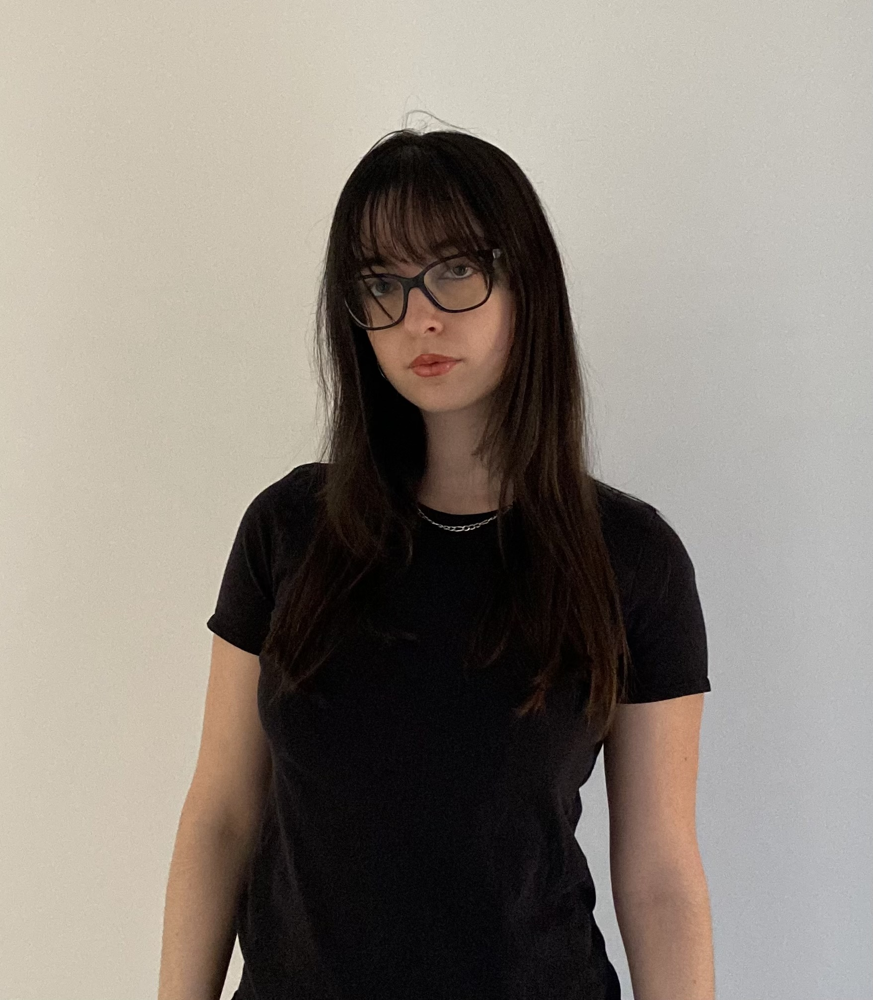
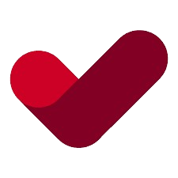
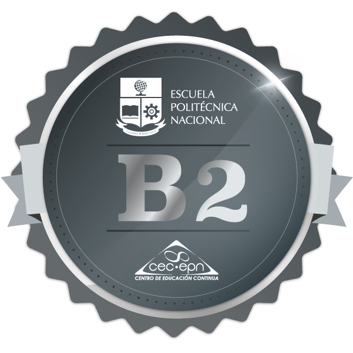

Skills





Hi! I’m a game developer, concept artist, and 3D artist with a passion for creating games in Unity. I'm currently studying Game Design and Development at CITM (UPC).
I thrive in collaborative environments, enjoy participating in game jams, and love bringing creative ideas to life.
I'm highly adaptable and quick to learn new workflows and pipelines, whether it’s switching to a different engine, adopting a new texturing method, or integrating into a new team's production style.
I’m always eager to evolve, explore new tools, and push the boundaries of my craft.


Vedruna Vall Terrassa
High School Education
CITM (UPC)
Game Design and Development
(Currently Studying)

English Certificate
B2 Level (Cambridge)